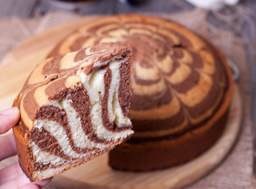

Назад
Пирог "Зебра"

1 час

12 порций

1 час
12 порций
Ингридиенты:
Сахар - 300 г
Мука - 250 г
Яйцо - 4 шт.
Сметана - 200 мл
Масло сливочное - 100 мл
Какао-порошок - 2 ст. ложки
Сода - 1 ч. л.
Пошаговый рецепт
- Подготовьте продукты по списку.
- Смешать муку с содой.
- В миске взбить яйца с сахаром. Взбивать не меньше 5 минут на максимальной скорости.
- Добавить сметану и топленое сливочное масло (не горячее), смешать миксером на маленькой скорости. Добавить муку с содой, перемешать миксером на маленькой скорости. Разделить тесто на две равные части.
- В одну добавить какао-порошок, смешать миксером на маленькой скорости.
- Фому застелить пергаментом и смазать сливочным маслом. Выложить 2 ст. л. белого теста, затем 2 ст. л. шоколадного теста. Таким образом чередовать слои. Сделать рисунок на поверхности пирога деревянной шпажкой.
- Выпекать пирог "Зебра" в заранее разогретой до 180 градусов духовке около 40 минут. Готовность проверить деревянной шпажкой - она должна быть чистая, без кусочков налипшего теста.